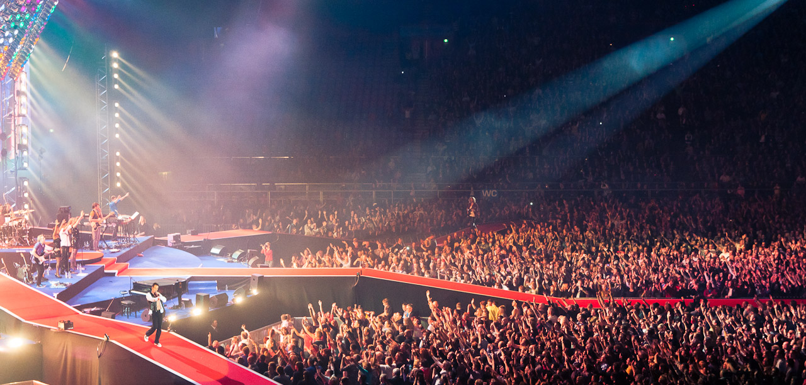

AC/DC


Info
Dinsdag 5 mei 2015
Prijs: vanaf € 74,00 exclusief servicekosten
Aanvang: 19.30 uur
Op 5 mei volgend jaar komt het legendarische AC/DC naar GelreDome. Deze aankondiging volgt nadat twee weken geleden het langverwachte nieuwe album van de band verscheen, getiteld 'Rock or Bust'
De band kan niet wachten om weer te gaan touren en ook wij zijn erg verheugd AC/DC weer te mogen verwelkomen in Nederland. Sterker nog, de komende tour wordt zelfs afgetrapt in Arnhem! Met de nieuwe plaat, die reeds twee weken in de Top 10 staat van de Album Top 100, en de bijbehorende singles 'Play Ball' en 'Rock or Bust' onder de arm zal het publiek in Nederland als eerste ervaren hoe deze live klinken. Maar uiteraard zullen klassiekers als 'Whole Lotta Rosie', 'Highway to Hell' en 'Thunderstruck' ook niet ontbreken.